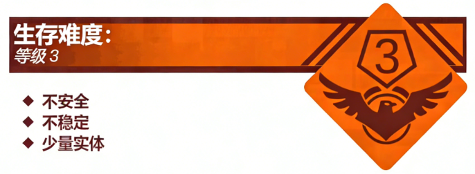
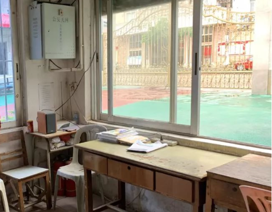

Level 0.9 是一个坐落于 Level 0 和 Level 1 之间的子层级，其内部空间大小近似于 Level 0.1，可容大约 3~4 名流浪者进入。Level 0.9 的外貌呈现为一座由瓷砖搭成的小型建筑，门口挂有醒目的“保安亭”标识牌，在 Level 0.9 的外墙上总是挂着一台老旧的电话座机。
此层级可以被看作临近 Level 0 的一个“实体巢穴型”建筑，其被大量“保安”所占据，该实体会经常在 Level 0 和 Level 0.9 之间往返站岗。关于“保安”的习性详见该页面的【实体】一栏。
Level 0.9 内部的设施都比较老旧，且会在流浪者每次到达这里时自动重新更改布局。层级内的设施大概如下：
一张木质桌子，桌面微有破损，上面铺着一张透明硅胶桌垫；一台微微泛黄的老式空调，运行时会发出“咔哒”声；一个电子监控显示屏，上面显示着各层级当前的样子；一扇窗户，透过窗户可以看到 Level 0 和 Level 1，但是由于未知原因，从 Level 0 无法透过窗户反向看到保安室内部的样子。除此之外，层级内还可能刷新这些物品：剪刀，圆珠笔，花名册，离校申请单，话筒，哨棍。经推测，这些物品都为实体“保安”的随身物品。因此，请流浪者不要随便触碰这些物品。
流浪者经常会在身不由己的情况下被要求前往 Level 0.9，主要原因之一是部分流浪者可能受到 The School Rooms 内一种特殊效应“物资遗漏”的影响而被“老师”被迫借用此层级的电话机向“家长”发送加密信息，将所忘带的作业遗漏的物品从“家”中送至 Level 0.9。在此请各位迫不得已需要靠近 Level 0.9 的流浪者小心行事。
另外，值得注意的是，实体“保安”似乎可以通过观看 Level 0.9 内的监控显示屏来了解流浪者的实时位置，而该层级的监控可以拍摄到多个层级的实况，为了避免在校园中的行踪被全部记录，请务必认真阅读以下监控可以拍摄到的层级列表：
监控可拍摄的层级：Level 0，Level 0.2，Level 1，Level 1.1，Level 1.5，Level 2，Level 3，Level 3.1，Level 3.-1_norm，Level 4，Level 4.1，Level 5，Level 5.1，Level 6，Level 7，Level 8，Level 10，Level 12，Level 13，Level 14，Level 15，Level 17，Level 18。
本层级唯一的实体是“保安”，他会在“上学时间”和“放学时间”拿着自己的哨棍在 Level 0 站岗。其他时间内，该实体会一直停留在 Level 0.9。当流浪者尝试进入 Level 0.9 后，其会先对流浪者进行警告，如果流浪者在发出警告的 2~3 秒内没有任何反应，“保安”就会拿起哨棍对流浪者进行驱逐。正是因为此原因，除非被“老师”允许，流浪者很难进入 Level 0.9 的内部。
在流浪者向“保安”提出借用电话机的请求后，就可以在 10 分钟内获得电话机的使用权，请有需要联系“家长”的流浪者在这段时间内尽快说明需求，若流浪者在此处停留的时间超过 10 分钟，则有很大可能会引起“保安”的敌意并被其驱逐。
特殊的是，如果流浪者手持被“家长”以及“老师”签过字的“请假条”来到 Level 0.9，“保安”将会在短时间内失去对你的所有敌意。此时只要向“保安”申请离开，流浪者就可以成功离开学校。
S.M.E.G —— 电话管理团：由 S.M.E.G 的 3 名成员组成，他们已经取得了“保安”的信任，负责帮忙管理 Level 0.9 内的电话。当流浪者因为忘记带“作业”要叫送时，可以向他们请求帮助。
VR-0.9：一个常驻于 Level 0.9 的组织，由 2 名“执勤队员”组成，会经常来到 Level 0.9 找“保安”唠嗑。他们对流浪者保持中立态度。
入口：在 Level 0 和 Level 1 的交界处有一个保安亭，走进保安亭即可进入 Level 0.9。
出口：原路返回即可回到 Level 1。如果实体“保安”同意你离开，且电动拉杆门开始缓缓打开，你就会在一阵白光中来到 Level 0，而此时“家长”一定会站在远处的街道上，且 Level 0 街道尽头的迷雾会短暂地消失。此时与远处的“家长”交互，会让你回到“家”。
欢迎回家！